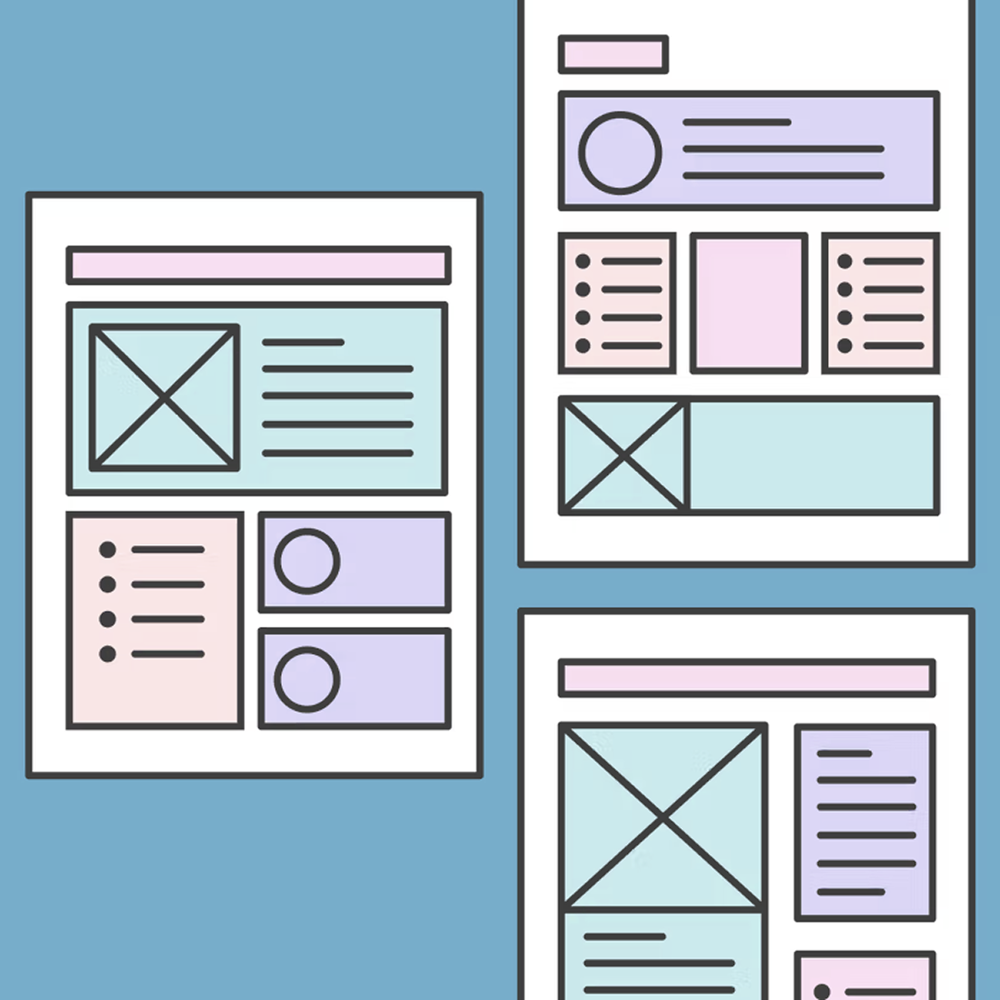

Mastercard's internal teams across the globe often operated in silos, resulting in a high volume of fragmented newsletters with inconsistent branding and varying quality. I spearheaded an initiative to centralize and optimize these internal communications.
I transformed the "Monthly Global Newsletter" from a manual design task into a scalable internal design system. This project was recognized with the H.E.A.R.T. Award, honoring my commitment to the "Mastercard Way" by delivering a best-in-class communication tool that increased global employee engagement and streamlined cross-functional updates.
As the Senior Lead for Digital Communication Design, I acted as a "Change Agent" to improve how our guild communicates:
This project required a unique blend of "technical wizardry" and strategic operational thinking:
"Shuma obtained the H.E.A.R.T. Award by creating and delivering the Mastercard Monthly Global Newsletter. He is a technical wizard and a quiet achiever who consistently goes above and beyond to achieve a deadline."